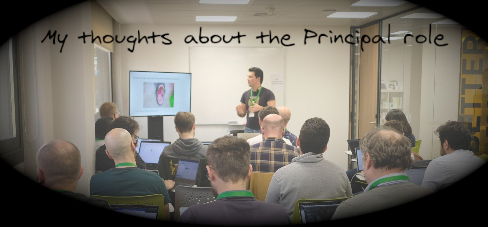

My thoughts about the Principal role
05 May 2021

What's a Principal Software Engineer?
One of the things I couldn't answer in the last 4-5 years was my role.
Am I a manager? No. In some cases, people may report to me from an organisational point of view but my way to manage is "don't manage at all" and let the team self organize with my help. I tend to focus more on the team and processes and less on people. I'm not a manager, I try to be a technical leader. Organizations that understand the Trident Career Model have "a great advantage because at scale, it is often hard to find people who have deep skills and experiences at both of these areas, and that it can be useful to discuss where someone's focus, passion or development progression lies". I think I could be a manager, but it wouldn't be so fun and, definitively, I don't want to be both things at the same time.
Am I a developer? Well, coding is something I like to do but I spent a lot more time helping others to code than coding myself. Even more important, because of frequent interruptions, I don't enjoy too much coding new features with hard deadlines. I prefer to work in proof of concepts or refactoring code because it isn't so problematic if I have to stop and resume it later. I also spend more time doing coding review than coding myself.
An architect? A big part of my work is to improve systems and platforms. Listen to problems and propose solutions. But I don't feel like the guy who does a plan which must be blindly followed by others. I don't want to be a gatekeeper who says what can be used and what can't.
As Miguel Garcia pointed reviewing the article, not all architects are gatekeepers. But it may happen some times. I prefer the role of Principal because I see it as something less theoretical. It's hard to visualize a real architect building a house with their own hands. It isn't so hard to imagine a skilled workman designing and building a house. I see design and architecture as something more collaborative and myself as a facilitator. I usually share my experience doing similar things in the past and I help to make teams think out of the box or see their problems from a different perspective. I want teams working with me to find the right solution together.
I also like to be involved in global architecture. As I see systems design as a collaborative task, global architecture works exactly in the same way but with other technical leaders and actors in the organization. When a C-level role defines the architecture without feedback from the technical leaders of the organization, it isn't only frustrating, it's also incomplete. Big organizations are too big to be designed by one individual (or a very small group): they need to be open and collaborative. See Before You Answer, Consider the Opposite Possibility for more info.
Am I a product manager? I work a lot with the roadmap and backlog of the platforms where I'm more involved. Evangelize the usage of the service is very important. But this applies more to internal platforms. For public services, it's just too much work and someone focused only on that is required. As it's a bad idea to have the product manager taking decisions on the technical side (implementation), it isn't a good thing for the Principal to go too much in Product management: define the roadmap of the product, what works for the users, etc. PMs and principals should work together and respect their boundaries. When one of them push too much, the delivery slows down because of excess technical debt or over-engineering. Both things are wrong.
Staff Engineer? That's a tricky one because it's very dependant on the organization so I don't have an answer for that. In some places, the role is for seniors who jump between teams. In others, it's for engineers more focused on processes than in systems. Anyway, in my opinion, a Principal Software Engineer builds long term relations with systems and teams.
The list goes on and on: Systems Engineer, Support Engineer, Project Manager, etc. Even the term "Individual contributor" seems wrong. My contributions aren't individual but working with individuals. The reality of the role is to do whatever is necessary to make teams and platforms succeed with the freedom to choose the best way to achieve it. A sort of technical "Jack of all trades, master of none". Martín Pérez comment on this article explains it perfectly.
One day I found this blog post in my timeline: Some Thoughts on the Principal Role. Based on this article, it was clear to me:
- I prefer to help people instead of manage people.
- I like to be very involved in development but not necessarily code it myself, in special features which take more time and need more focus.
- I help with ideas, patterns and processes to build better systems but I don't like to tell other engineers what have to do.
What a revelation! As explained in the article, I've been a Principal Software Engineer for years without being aware of it. Not only that, it's what I want to do, what makes me happy nowadays. It was great to know there is a name for my role and other people out there with the same motivations and struggles. It's for them, I wrote this article. I want to share my main challenges and experiences in this role.
No clear definition of the role: the management trap
Many organizations don't understand the role. They understand they need it but not the role itself. This tends to lead to the "we need people with a strong technical background to lead our teams" approach.
It's easier to fall into that trap. I think I'm joining the company as Principal but I end working as Project Manager (or similar). I have experience as an Engineering Manager but even with that, things don't evolve well in this situation. If I continue working as a manager, I will slowly lose my technical skills but the organization expects them so, in the long term, I won't meet their expectations. If I focus more on the technical part, I will neglect the people I manage which it's the most important job of a manager. If, somehow, I fight to keep both things I will end suffering job burnout. The article Maker's schedule, manager's schedule is a great explanation about why both things aren't compatible in the long term.
It isn't easy to solve this misalignment between the company and you. I usually try to make alliances with people managers so I can focus on my role as an engineer. I also evangelize about the role and how to implement it properly in the organization. Some of my tasks (recruiting, DevRel, community) require a lot of communication with HR and it helps to make them see the need for separated technical and people career paths.
If after a while things don't evolve, a job change is the only alternative. Most organizations tend to listen when their engineers leave so it's a good opportunity to help them to make this right.
Relation with managers
Build a good relation with engineering managers is very important to succeed in the role. It's quite frustrating when managers take decisions without taking engineers into account. It's especially problematic when they decide on technical things which have a huge impact on the platform. They should ask about architecture and processes. Principals should inform them to have the knowledge to report and publish to the rest of the organization what we are doing.
This is particularly complex with managers who have a good technical background. Because they tend to try to manage people and systems. They are too busy so they take shortcuts: decide now, explain to the team later. It's hard to deal with this because it's an organisational issue. Managers should focus on people, engineers on systems. Processes should be the common ground.
Based in Eloy Coto's feedback, I'm going to stop here. Relation with managers is tricky and, in many cases, very dependant of the organization. If you have been working in big organization, you already know the relation with your manager is probably one of the main factors for success. I'm not particularly good on this so I need more advise than the advise I can give!
Don't be a hero
Another typical trap of the role is to become a hero. It may happen for many reasons, being typical that it's easier to ask you about something than to think about it. So other engineers may rely on you for tasks they don't like.
This isn't an issue when starting with a team but it's a huge problem in the long term. If after one year, you can't leave a team without impact, you've failed in your work. It's that simple.
One of the best ways to avoid this is to apply the leader-leader approach as explained in the book Turn the ship around. Don't tell people what they have to do but help them to define next the steps and identify trade-offs. I always try to make questions instead of giving answers: "Have you tried ...?", "What do you think of... ?", "What do you propose as an alternative?", etc. Senior Engineers build consensus. Mentorship is one of my main tasks.
You will have a better life, and which it's more important, you will focus on what's important. Your teams will grow and learn and they will be happy because of that. Being a hero, you become the villain. Don't do that.
Keep your optimism
Be a principal can be frustrating because your goals are now more aligned with your organization. It's a technical role but it's also oriented to people. You usually have a lot of meetings because of that, which it's probably one of the reasons you didn't become a manager in the first place. At some point, you may sense you aren't learning as much as you did in the past. That's a warning signal for me: things have to change.
Give you some space to experiment and do things that motivates you is essential to be successful in the long term. They may be not the most urgent things for the company but, in my experience, that's exactly why they are important. Principals should be able to see to the future and start that journey. If you are stuck all the time in what's urgent, it's very difficult to do that. Nacho Garmilla, another of my mentors, wrote in a comment that the flexibility of the role can help on this: you don't have to limit yourself to your usual tasks: you can contribute in other areas if it's something motivating.
There is an excellent article about this: Being glue. It's from the perspective of a junior software engineer who wants to be promoted but it isn't because it's doing what's best for the team always. It ends badly. So, instead, try to save some time to do whatever makes you happy in your work. Ask for help. In the end, you will discover it has also value when properly combined with Glue work.
Finally, if you encounter toxic people, don't let them make you lose your optimism. In most cases, report it to my manager and ignore them after that worked well for me. There are a lot of wonderful people out there: focus on them!.
Don't stop coding
Coding is the best expression of the work of a Software Engineer. It's how we transform ideas into something real. It's also a very demanding task. If you stop coding for a while, you lose a lot of fluency and it becomes very frustrating. If you add the lack of enough long calendar slots and all the interruptions, it can be a nightmare. It's important for a Principal to feel confident when coding even if it isn't her primary task but it isn't easy to achieve it.
Some tricks that help me with this:
- Try to block in your calendar some time every day for coding: I usually use my early mornings. Most of the team isn't connected yet and I'm fresh. Start the day with a Pull Request is a great feeling.
- Avoid working on things that are on the critical path: you aren't going to have time. You think you will, but you don't. Deadline will arrive and the whole process will become very frustrating: deliver late or working after-hours. Both options are bad in the long term. So be realistic, don't work on critical features. I prefer to work in Technical Debt, refactorings or Proofs of Concept. There is a lot of value there because the team don't always have time to address these things and I can work without pressure.
- Daily goal: code every day. I track my daily tasks and I have one for coding and another one for writing/reading. It isn't always possible but at least I have it very present.
- Find something fun: pet projects are a good way to stay motivated and learn. They also require some time and that's very personal. Don't get frustrated if you don't have time for them, but if you do and you have fun, go for it.
- Coding platforms are a great way to keep your skills. I recommend exercism.io. It's open and the exercise can be done in your favourite IDE. The feeling is quite close to a real problem.
Career goals
One of the problems in the role is what's come next. The principal role is at the end of the Individual Contributor path. Indeed, your contributions come now from the group you are helping. Yes, you can aspire to add Senior or whatever level number has your company... but that's just naming, which usually implies better a salary. Nobody complains about a salary raise but optimize to career based on the salary is a quite bad idea if you are already covered.
You can aspire to a Distinguished / Fellow role. It's a legit goal. I'm not very familiar with these roles. In my head, they mean more salary and more contact with the C-Suite. Both things are fine but they aren't intrinsic motivations (at least not for me).
There is always the option to move to the Management track as Senior Engineer Manager or Director. That's fine if it's what you want to do but it's just a different role and you should be aware of that. It has little value as a promotion if it isn't what makes your life happier.
In summary, as Principal Software Engineer, promotions aren't going to be the goal so you need to find new ones and that's highly dependant on each person. In my case, it's to learn new things. It has been always my passion and the reason I'm a software engineer. This role allows me to learn new things every day and help others. I can't ask for anything more.
Conclusions
I didn't cover everything I would like but this is article is already too long and I don't want to write a book (there is already one: Staff Engineer: Leadership beyond the management track). I would love to know what do you think about the Principal role, especially if you disagree with me. Leave a comment on GitHub or just drop me a message on BlueSky, I'm always open to have a chat about the role or share my experiences.
Update
This article made it to the top 5 articles in HackerNews! There are a lot of interesting comments covering very different points of view.